Candidate List 20260901Last night — ZTF: 2,054 passed basic cuts (65 young) · LSST: 0 passed basic cuts (0 young)Previous Day Next Day
Section 1: New Sources (age<1d) Section 2: Old (1-5d) sources observed last nightplaceholder
Section 1: New Afterglow/FBOT Cands Last Night (0)
Section 2: Older Sources Observed Last Night (9)
0. [ZTF] ZTF26abramlb (FBOT?) [NED transient: PSO J011.2292+41.5531 (V*, 8.5″) — reported, not trusted] [Back to Top] [Share] [Trigger Swift] [Fritz Alert] [Fritz Source] [Lasair]RA, Dec: 11.22607, 41.55293 0h44m54.26s, 41d33m10.53sGalactic (l, b): 121.62, -21.30218 ext(g-r) = 0.488


TESS: Sectors [17 57 84]
PS1: 1 source in 3 arcsec Closest: d = 1.09 arcsec photoz=0.16+/-0.03 peak abs mag = -24.64
LegacySurvey: 0 sources in 3 arcsec

Extinction-corrected gr color:
From alerts: -0.55 +/- 0.04 mag
Rise Rate:
g: 1.18 mag/day
r: 1.16 mag/day
Fade Rate:
1. [ZTF] ZTF26abrfbix (Afterglow?) [Back to Top] [Share] [Trigger Swift] [Fritz Alert] [Fritz Source] [Lasair]RA, Dec: 7.05954, 30.80232 0h28m14.29s, 30d48m8.36sGalactic (l, b): 117.06971, -31.80521 ext(g-r) = 0.085


TESS: Sectors [17 57 84]
PS1: 0 sources in 3 arcsec
LegacySurvey: 1 sources in 3 arcsec Closest: d = 6.98 arcsec, 28.0 deg (east of north) photoz=0.09 (68% bounds 0.01, 0.12), type=SER peak abs mag (ext. corrected) = -19.42 (68% bounds -15.38, -20.07)

Extinction-corrected gr color:
From alerts: 0.1 +/- 0.18 mag
Consistent with synchrotron, g-r>0!
Rise Rate:
g: 0.32 mag/day
r: 0.92 mag/day
Fade Rate:
2. [ZTF] ZTF26abrhnwq (Afterglow?) [Back to Top] [Share] [Trigger Swift] [Fritz Alert] [Fritz Source] [Lasair]RA, Dec: 129.84014, 21.77736 8h39m21.63s, 21d46m38.50sGalactic (l, b): 203.45958, 32.96538 WARNING: 3.25 deg from ecliptic plane ext(g-r) = 0.038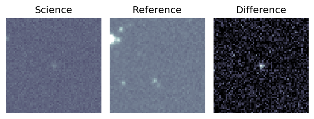
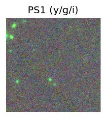
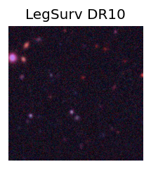
TESS: Sectors [44 45 46 72]
PS1: 0 sources in 3 arcsec
LegacySurvey: 1 sources in 3 arcsec Closest: d = 0.08 arcsec, 72.2 deg (east of north) photoz=0.71 (68% bounds 0.44, 1.23), type=PSF peak abs mag (ext. corrected) = -25.84 (68% bounds -24.62, -27.32)
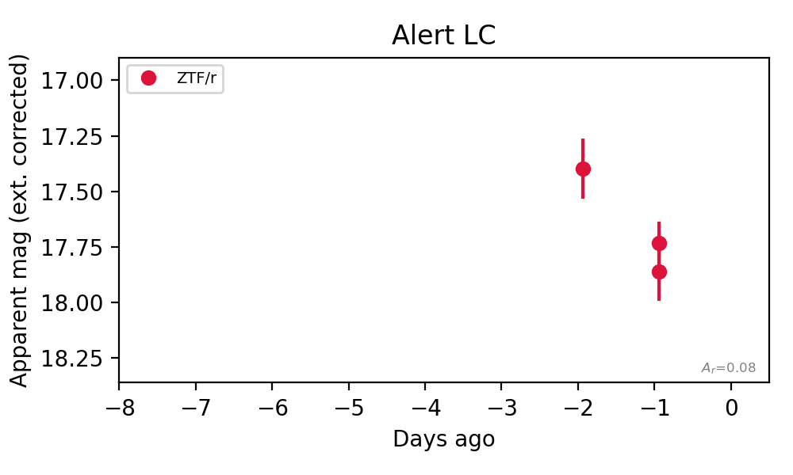
Rise Rate:
Fade Rate:
r: 0.38 mag/day
3. [ZTF] ZTF26abrjrpc (Afterglow?) [Back to Top] [Share] [Trigger Swift] [Fritz Alert] [Fritz Source] [Lasair]RA, Dec: 289.64563, -4.35093 19h18m34.95s, -4d-21m-3.34sGalactic (l, b): 32.1338, -8.01629 ext(g-r) = 0.541


TESS: Sectors 80
SDSS (<15 kpc):Found SDSS phot-z: z=0.05; peak abs mag = -18.44
PS1: 1 source in 3 arcsec Closest: d = 4.01 arcsec photoz=0.88+/-0.11 peak abs mag = -25.36
LegacySurvey: 0 sources in 3 arcsec

Extinction-corrected gr color:
From alerts: -0.37 +/- 0.25 mag
Extinction-corrected gi color:
From alerts: -0.32 +/- 0.28 mag
Extinction-corrected ri color:
From alerts: -0.09 +/- 0.24 mag
Consistent with synchrotron, g-r>0!
Rise Rate:
g: 0.1 mag/day
r: 0.13 mag/day
i: 0.4 mag/day
Fade Rate:
i: 0.65 mag/day
4. [ZTF] ZTF26abrmdnv (Afterglow?) [Back to Top] [Share] [Trigger Swift] [Fritz Alert] [Fritz Source] [Lasair]RA, Dec: 357.15659, 50.42314 23h48m37.58s, 50d25m23.29sGalactic (l, b): 112.80743, -11.20976 ext(g-r) = 0.196


TESS: Sectors [17 24 57 84]
PS1: 1 source in 3 arcsec Closest: d = 7.58 arcsec photoz=0.09+/-0.02 peak abs mag = -18.90
LegacySurvey: 0 sources in 3 arcsec

Extinction-corrected gr color:
From alerts: -0.06 +/- 0.31 mag
Consistent with synchrotron, g-r>0!
Rise Rate:
g: 0.83 mag/day
r: 0.66 mag/day
Fade Rate:
5. [ZTF] ZTF26abrmguw (Afterglow?) [Back to Top] [Share] [Trigger Swift] [Fritz Alert] [Fritz Source] [Lasair]RA, Dec: 26.19491, 55.36167 1h44m46.78s, 55d21m42.00sGalactic (l, b): 130.5176, -6.7225 ext(g-r) = 0.288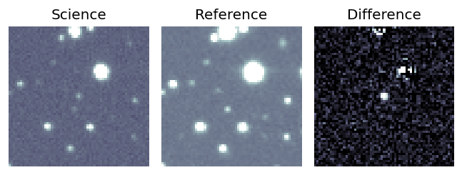
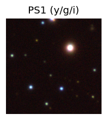

TESS: Sectors [18 58 85]
PS1: 0 sources in 3 arcsec
LegacySurvey: 0 sources in 3 arcsec
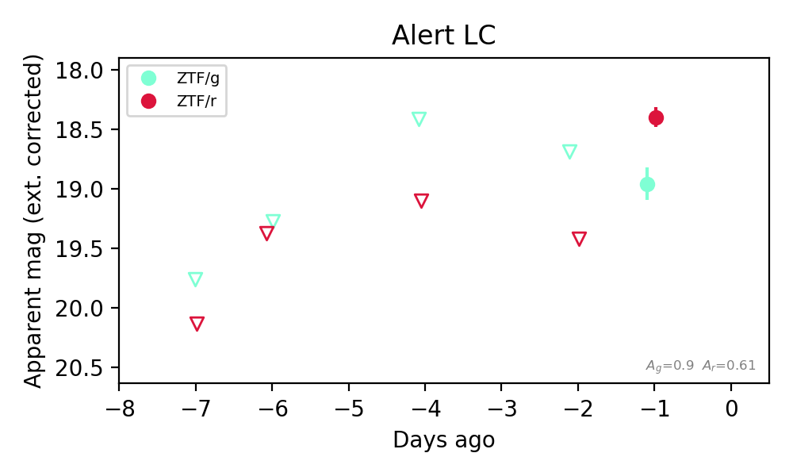
Extinction-corrected gr color:
From alerts: 0.56 +/- 0.16 mag
Consistent with synchrotron, g-r>0!
Rise Rate:
g: 0.14 mag/day
r: 1.02 mag/day
Fade Rate:
6. [ZTF] ZTF26abrmind (FBOT?) [Back to Top] [Share] [Trigger Swift] [Fritz Alert] [Fritz Source] [Lasair]RA, Dec: 30.27866, 33.20905 2h 1m6.88s, 33d12m32.57sGalactic (l, b): 139.3239, -27.43515 ext(g-r) = 0.086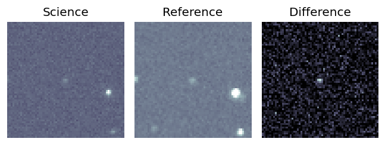
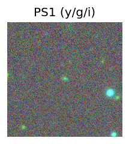
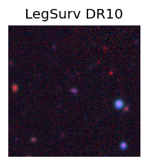
TESS: Sectors [18 58]
SDSS (<15 kpc):Found SDSS phot-z: z=0.22; peak abs mag = -20.81
PS1: 0 sources in 3 arcsec
LegacySurvey: 1 sources in 3 arcsec Closest: d = 0.12 arcsec, 71.7 deg (east of north) photoz=0.16 (68% bounds 0.13, 0.24), type=EXP peak abs mag (ext. corrected) = -20.05 (68% bounds -19.45, -20.99)
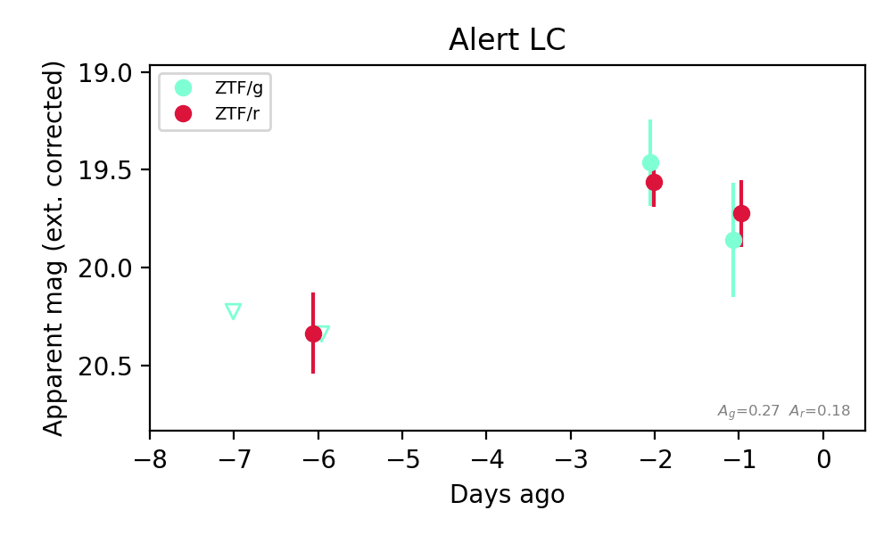
Extinction-corrected gr color:
From alerts: 0.13 +/- 0.34 mag
Consistent with synchrotron, g-r>0!
Rise Rate:
g: 0.22 mag/day
r: 0.14 mag/day
Fade Rate:
7. [ZTF] ZTF26abrncde (FBOT?) [Back to Top] [Share] [Trigger Swift] [Fritz Alert] [Fritz Source] [Lasair]RA, Dec: 220.73623, 30.05219 14h42m56.69s, 30d 3m7.88sGalactic (l, b): 46.38477, 65.40929 ext(g-r) = 0.015


TESS: Sectors [23 24 50 77]
SDSS (<15 kpc):Found SDSS phot-z: z=0.89; peak abs mag = -24.36
PS1: 0 sources in 3 arcsec
LegacySurvey: 1 sources in 3 arcsec Closest: d = 0.81 arcsec, 283.7 deg (east of north) photoz=0.51 (68% bounds 0.39, 0.67), type=REX peak abs mag (ext. corrected) = -22.89 (68% bounds -22.2, -23.62)

Extinction-corrected gr color:
From alerts: -0.21 +/- 0.26 mag
Consistent with synchrotron, g-r>0!
Rise Rate:
g: 0.25 mag/day
r: 0.04 mag/day
Fade Rate:
8. [ZTF] ZTF26abrngpw (Afterglow?) [Back to Top] [Share] [Trigger Swift] [Fritz Alert] [Fritz Source] [Lasair]RA, Dec: 253.99395, 61.5151 16h55m58.55s, 61d30m54.36sGalactic (l, b): 91.2696, 37.27879 ext(g-r) = 0.06


TESS: Sectors [ 14 15 16 18 19 20 21 22 23 24 25 26 40 41 47 48 49 50
51 52 53 55 56 58 59 60 73 74 75 76 77 78 79 80 81 82
83 85 86 117 118 119 120 121]
PS1: 0 sources in 3 arcsec
LegacySurvey: 1 sources in 3 arcsec Closest: d = 2.24 arcsec, 238.3 deg (east of north) photoz=0.85 (68% bounds 0.64, 1.03), type=REX peak abs mag (ext. corrected) = -25.17 (68% bounds -24.4, -25.68)

Rise Rate:
g: 0.38 mag/day
Fade Rate:
g: 0.32 mag/day